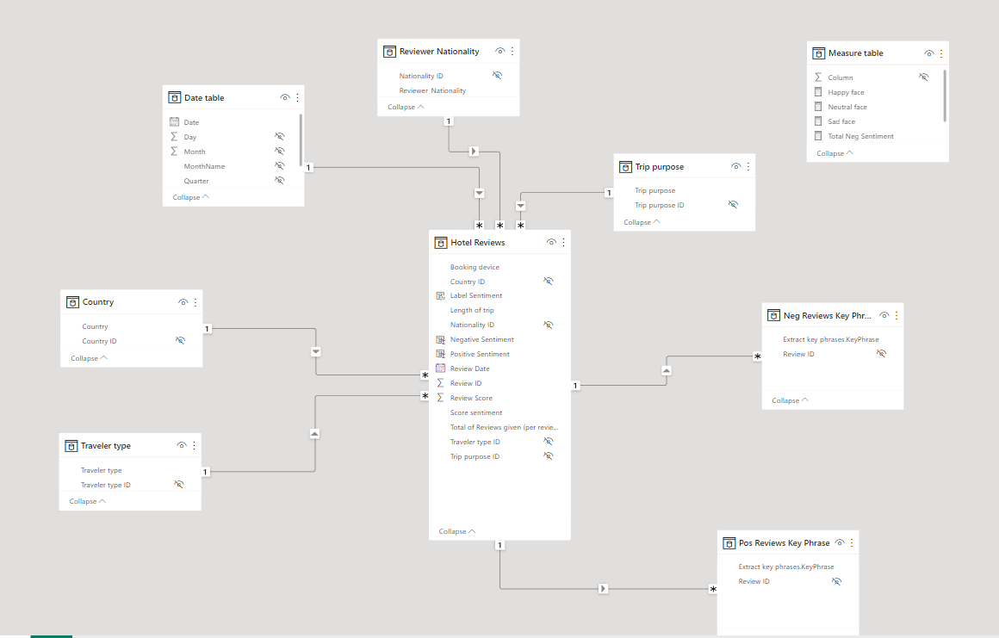
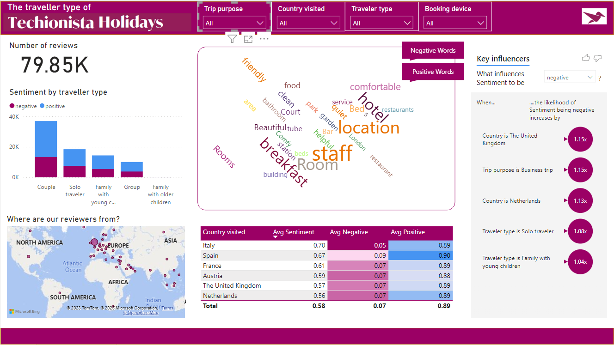

The reviews pose a challenge as they are in the form of free text fields. While these text fields contain rich information, deriving aggregated insights becomes challenging because the data is qualitative rather than numerical. Analyzing every individual written statement about the hotels would be an impractical task.
Analyze different types of travelers and their feedback about Techionista Holidays
15 Feb, 2023
Azure Cognitive Services | Power BI
Project Overview
In this project we worked with an extensive dataset from Techionista Holidays. Among other information, it contains reviews from their users after their stay at a hotel they booked through the Techionista Holidays website. These reviews date from 2015 to 2017 and contain lots of information on how travelers have experienced their stay in various luxurious hotels across Europe. Techionista Holidays managers would love to gain more insight into the different types of travelers and their feedback. These valuable insights can help them improve Techionista's Holidays website and their capability of catering to their users needs
The dataset, containing 515,000 customer reviews and scoring of 1493 luxury hotels across Europe, is stored in Azure Blob Storage. To analyze this dataset, we need to establish a connection to it from Power BI Desktop. Here is the dataset description:
- Hotel_Address: Address of hotel.
- Review_Date: Date when reviewer posted the corresponding review.
- Average_Score: Average score of the hotel, calculated based on the latest comment in the last year.
- Hotel_Name: Name of hotel.
- Reviewer_Nationality: Nationality of reviewer.
- Negative_Review: Negative review the reviewer gave to the hotel. If the reviewer does not give a negative review, then it should be: 'No Negative'.
- Review_Total_Negative_Word_Counts: Total number of words in the negative review.
- Positive_Review: Positive review the reviewer gave to the hotel. If the reviewer does not give a positive review, then it should be: 'No Positive'.
- Review_Total_Positive_Word_Counts: Total number of words in the positive review.
- Reviewer_Score: Score the reviewer has given to the hotel, based on his/her experience.
- Total_Number_of_Reviews_Reviewer_Has_Given: Number of reviews the reviewer has given in the past.
- Total_Number_of_Reviews: Total number of valid reviews the hotel has.
- Tags: Tags reviewers used in their review.
- days_since_review: Duration between the review date and scrape date (the scrape date being the date the data was scraped from the Booking.com website, which is about 4 years ago).
- Additional_Number_of_Scoring: Some guests only made a scoring on the service rather than providing a review. This number indicates how many of those valid scores a hotel has that don't include a review.
- lat: Latitude of the hotel.
- lng: Longitude of the hotel.
Challenges
Step by Step solution
STEP 1: Define Business Requirements
Initially, we identified the key information that the managers of Techionista Holidays desired based on the Business Case. The objective was to provide insights into different types of travelers and their feedback, enabling improvements to Techionista's Holidays website to better cater to user needs. To accomplish this, we determined that it was crucial to combine traveler information with their reviews. The specific insights we aimed to provide included:
- Traveler type (e.g., couple, friends, kids)
- Trip purpose
- Reviewer nationality
- Length of stay
- Booking device
- Country visited
- Reviewer score
To gain a deeper understanding and facilitate meaningful comparisons among the reviews, we made the decision to perform both sentiment analysis and keyword phrase analysis. The objective was twofold: first, to derive an overall score that represents the sentiment of each review, and second, to identify specific positive or negative words used within the reviews. By conducting these analyses, we aimed to extract valuable insights and uncover patterns, enabling us to assess the overall sentiment and identify key aspects that contribute to positive or negative feedback from travelers.
STEP 2: Transforming and Cleaning
After establishing a connection with the dataset stored in Azure Blob Storage, we proceeded with data cleaning and transformation.
- Initially, we eliminated errors and unnecessary columns, followed by renaming columns and adjusting data types as required. Since our focus was on traveler types and their reviews, information specifically related to hotels was deemed unnecessary and therefore eliminated from the dataset.
- To extract additional insights, we utilized the 'Tags' column and implemented conditional columns to create new columns for trip purpose, number of nights, traveler type, and country of the hotel.
- For enhanced filtering capabilities, we divided the large table into smaller Dim tables.
- To validate the sentiment analysis, we initially selected 75 rows and successfully applied Azure Cognitive Services.
- Subsequently, we focused our analysis on the top 100,000 rows of data, specifically targeting reviews from 2017 and eliminating rows without traveler type information.
- To facilitate sentiment analysis, we duplicated the positive and negative reviews and merged them into a single column.
- Finally, we conducted a key phrase analysis on both the negative and positive review columns to extract further insights from the data.
STEP 3: POWER BI DASHBOARD/REPORT
In summary, our approach in building the dashboard involved the following steps:
- Created a date table and established necessary relationships in the Model view.

- Added relevant measures for future dashboard visuals in the Report view.
- Developed a profile of 'The Techionista Traveler' with the ability to showcase outcomes for different traveler types, enabling the marketing team to focus on specific groups in their marketing efforts.
- Implemented slicers to enable users to filter and explore different combinations of traveler groups.
- Utilized a column chart to illustrate variations in sentiment across different traveler types.
- Incorporated a map visual to display the geographic distribution of reviewers.
- present the results of both sentiment analysis and keyword phrase analysis.
- Leveraged key phrases, both positive and negative, to identify specific words frequently used by particular groups for marketing purposes
- Utilized sentiment analysis to compare the sentiment across countries visited by reviewers and to identify key influencers that impact the sentiment of specific groups, offering valuable insights for marketing goals.
The report file can be found here. here
